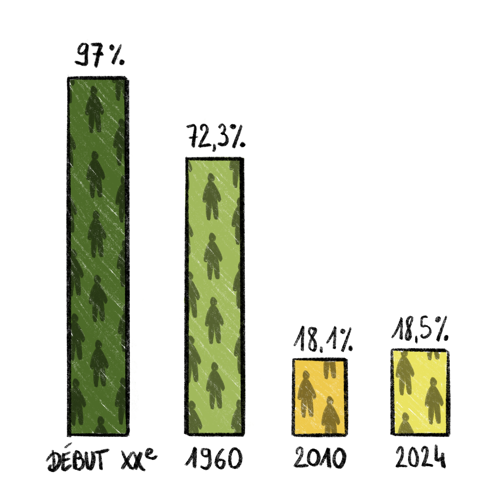
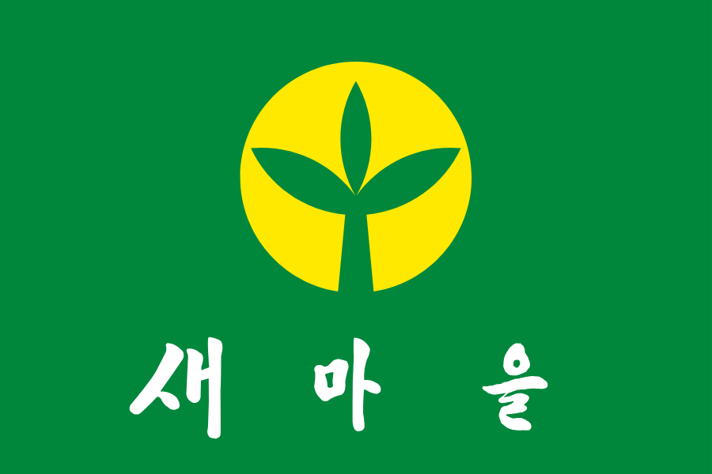

1. L'effondrement de la ruralité coréenne
En une génération, la Corée du Sud est passée d'une société agraire à l'une des plus urbanisées du monde.
Avant l'industrialisation (début du XXe siècle), la population urbaine ne représentait qu'environ 3% du pays. La part rurale culmina encore à 72,3% en 1960, pour tomber à un minimum de 18,1% en 2010 et 18,5% en 2024. Depuis la guerre de Corée, et entre les années 1960 et 1990, plus de 10 millions de familles ont quitté la campagne pour la ville.
Cette bascule a pour miroir une concentration extrême dans la région capitale. Séoul à elle seule abrite environ 20% de la population. Surtout, la région capitale au sens large (Séoul + Incheon + Gyeonggi) a franchi un seuil symbolique : fin 2023, elle regroupait 26,1 millions d'habitants, soit 50,7% du pays. Un Coréen sur deux vit désormais là, sur une fraction du territoire. Le basculement est récent (le cap des 50% a été passé vers 2019-2020) et prolonge un siècle d'exode rural vers les centres urbains : Séoul est passée d'environ 2 millions d'habitants en 1960 à plus de 10 millions.

Part rurale de la population coréenne au fil des ans

Répartition de la population sur le territoire sud-coréen en 2023

Drapeau du Saemaul Undong
Le Saemaul Undong : la modernisation par l'État
Au-delà des dynamiques démographiques contemporaines, l'État coréen a historiquement orchestré une transformation radicale du monde rural, notamment avec le mouvement Saemaul Undong.
Initié en 1970 par le président Park Chung-hee, ce programme de modernisation visait à extirper les campagnes de la pauvreté. Son originalité reposait sur un modèle hybride combinant l'aide matérielle de l'État (fourniture de ciment et d'acier) et le travail bénévole des villageois. Reposant sur une logique de compétition méritocratique, ce système récompensait les communautés les plus actives par des subventions accrues, tandis que les villages passifs se voyaient privés de soutien.
Ce mouvement a profondément métamorphosé le paysage sud-coréen en généralisant l'accès à l'électricité, en modernisant l'habitat et en développant le réseau routier.
Population rurale et population agricole
Il faut distinguer deux mesures souvent confondues :
- Population « rurale » (résidents des eup et myeon) : 14,0 millions en 1985 (34,6% du total), tombée à 8,7 millions en 2005 (18,5%), autour de 9,6 millions aujourd'hui (Banque mondiale).
- Population agricole (foyers agricoles, 농가인구), bien plus restreinte : environ 2,2 millions en 2021. Surtout, le nombre de foyers agricoles est passé sous la barre du million pour la première fois depuis le début du recensement en 1949 (999 000 fin 2023).
Le vieillissement y est important : la part des agriculteurs de 65 ans et plus a atteint 52,6% en 2023 (contre 18,2% pour l'ensemble de la population), l'âge moyen de l'exploitant atteint 67,7 ans, et à peine 5,5% des agriculteurs ont moins de 40 ans. L'agriculture reste peu rémunératrice : 64,5% des foyers agricoles vendent pour moins de 10 millions de wons par an (7 200 $).
Le tout sur fond d'effondrement démographique national : indice de fécondité de 0,75 en 2024 (le plus bas au monde), plus de décès que de naissances depuis 2020, et 19,3% de la population âgée de 65 ans et plus.
La « disparition régionale » (지방소멸)
L'Institut coréen de l'information sur l'emploi mesure un indice d'extinction locale = rapport entre les femmes de 20-39 ans et la population de 65 ans et plus. Une zone est jugée à haut risque sous 0,5. La moyenne nationale est de 0,615 ; le Jeollanam-do, voisin de Sannae, est le plus menacé à 0,329 (mars 2024).
Le Bureau d'audit prévoit qu'à l'horizon 2047, les 226 communes du pays pourraient être en risque d'extinction, dont environ 70% à risque élevé. Le risque est 5,8 fois plus élevé dans les myeon que dans les eup. En 2022, près de 90 zones ont été désignées « zones de dépeuplement » et dotées d'un fonds d'un trillion de wons par an sur dix ans.
2. Sannae-myeon
Un canton rural au pied du Jirisan
Sannae-myeon (산내면) est un myeon (canton rural) de la ville de Namwon, dans le Jeonbuk (anciennement Jeollabuk-do, devenu Jeonbuk, province autonome spéciale, en 2024), au pied du Jirisan, à l'ouest du massif. Namwon est la plus petite ville du Jeonbuk (74 000 habitants en 2025), la capitale provinciale étant Jeonju (625 000).
Un déclin démographique récent
Sannae a longtemps fait figure d'exception dans le paysage rural coréen, mais le déclin l'a rattrapé : en février 2025, le canton comptait 1 987 habitants, sous la barre des 2 000 pour la première fois en 17 ans. La population avait culminé à 2 225 en 2014, avant de redescendre : 2 088 fin 2022, 2 040 fin 2023, 2 006 fin 2024.
La structure par âge est celle d'un territoire très vieillissant : les 50-69 ans représentent près de 47% des habitants (50 ans : 23,7% ; 60 ans : 23,2%), tandis que les 20-30 ans ne sont que 186 personnes, soit 9,3% du total. Le nombre de ménages, lui, a continué de croître jusqu'à un pic de 1 188 foyers en 2022 avant de refluer.
L'afflux des néoruraux
Ce qui rend Sannae atypique, c'est l'ampleur du retour à la campagne : le rapport entre habitants venus d'ailleurs (귀농-귀촌) et natifs y est désormais proche de 1/1, une part exceptionnelle pour un myeon.
Beaucoup viennent de Séoul, certains très diplômés, ils s'installent souvent en couple actif (trentenaires-quarantenaires), parfois en « demi-agriculture » (un membre cultive, l'autre exerce un métier qualifié à distance).
Une estimation de 2013 situait déjà ces nouveaux arrivants à 350-400 personnes. Cet afflux, adossé au temple de Silsangsa et à la communauté Indramang, est justement une des caractéristiques qui nous intéressent pour notre documentaire.
3. Les définitions administratives et sociales de la ruralité coréenne
Hiérarchie administrative
La Corée s'organise en : province (do) → ville/comté/district (si / gun / gu) → bourg/canton/quartier (eup / myeon / dong) → village (ri) → hameau (ban).
Le partage urbain/rural
Avant 1995, l'opposition se faisait entre si (urbain) et gun (rural) ; depuis la réforme de 1995 (création des villes mixtes urbain-rural), le rural correspond aux eup et myeon, et l'urbain aux dong. Concrètement :
- Eup (읍) : bourg plus étoffé, seuil minimal de 20 000 habitants.
- Myeon (면) : canton, plus petit que l'eup, représentant les zones rurales d'un comté ou d'une ville, c'est le statut de Sannae, donc administrativement rural par définition.
- Dong (동) : quartier urbain.
À l'échelle nationale, le pays compte 216 eup et 1 198 myeon, et ces zones rurales couvraient 89,7% du territoire en 2005 pour à peine 18% de la population, un contraste qui résume la déprise rurale.
Définition sociale
Au-delà de l'administratif, la ruralité coréenne se caractérise par une économie longtemps agricole, un vieillissement marqué, une faible densité et des liens communautaires forts. Mais cette définition se brouille : émergent le « 반농 » (ban-nong, demi-agriculture, un membre du foyer cultive, l'autre exerce un métier qualifié à distance) et surtout les dynamiques de 귀농 / 귀촌 (retour à la terre / retour au village).
Le mouvement 귀농-귀촌 (gwinong / gwichon)
La frontière urbain/rural se brouille surtout sous l'effet de ce mouvement devenu un fait social majeur depuis les années 2010, au point que l'État en publie des statistiques annuelles et en a fait un levier explicite contre la « disparition régionale ».
On distingue le 귀농 (gwinong), installation à la campagne pour y vivre de l'agriculture, et le 귀촌 (gwichon), bien plus massif, installation en zone rurale sans en faire son métier (choix de cadre de vie). L'écart entre les 2 modes de vie est significatif : en 2024, on recense 318 658 foyers « gwichon » (422 789 personnes) contre seulement 8 243 foyers « gwinong » (10 710 personnes), l'écrasante majorité des néo-ruraux ne viennent donc pas cultiver, mais vivre autrement.
Les deux profils divergent nettement : le retour proprement agricole décline (en 2024, troisième année de baisse consécutive et plus bas niveau jamais mesuré, la part des jeunes de moins de 40 ans atteignant un nouveau record), il est âgé (chef de foyer de 56 ans en moyenne en 2023, avec près de 77% de ménages d'une seule personne) et plombé par des revenus agricoles souvent inférieurs à 10 millions de wons par an.
Ces différences dynamiques traversent également le village de Sannae, à la nuance près qu'il s'organise autour d'un projet communautaire, ce qui en fait un cas particulièrement abouti de redéfinition concrète du « rural ».
| Niveau administratif | Coréen | Romanisation | Traduction |
|---|---|---|---|
| Premier niveau administratif |
광역시 | Gwangyeok-si | Ville métropolitaine |
| 특별시 | Teukbyeol-si | Ville spéciale (Séoul) | |
| Deuxième niveau administratif |
시 | Si | Ville |
| 군 | Gun | Comté |
Tableau récapitulatif des classifications administratives du territoire coréen